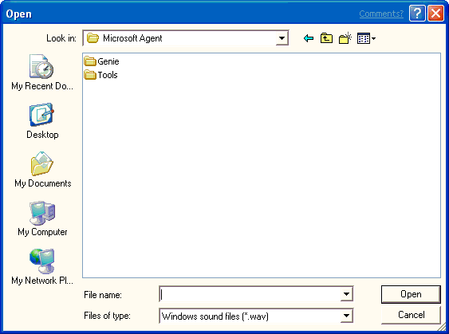

[Microsoft Agent is deprecated as of Windows 7, and may be unavailable in subsequent versions of Windows.]
You can also load an existing Windows sound file (.wav) or linguistically enhanced sound file (.lwv) by choosing the Open command from the File menu or the toolbar. This displays the Open dialog box. Select a file and click Open to load the file into the editor.

Â
Â